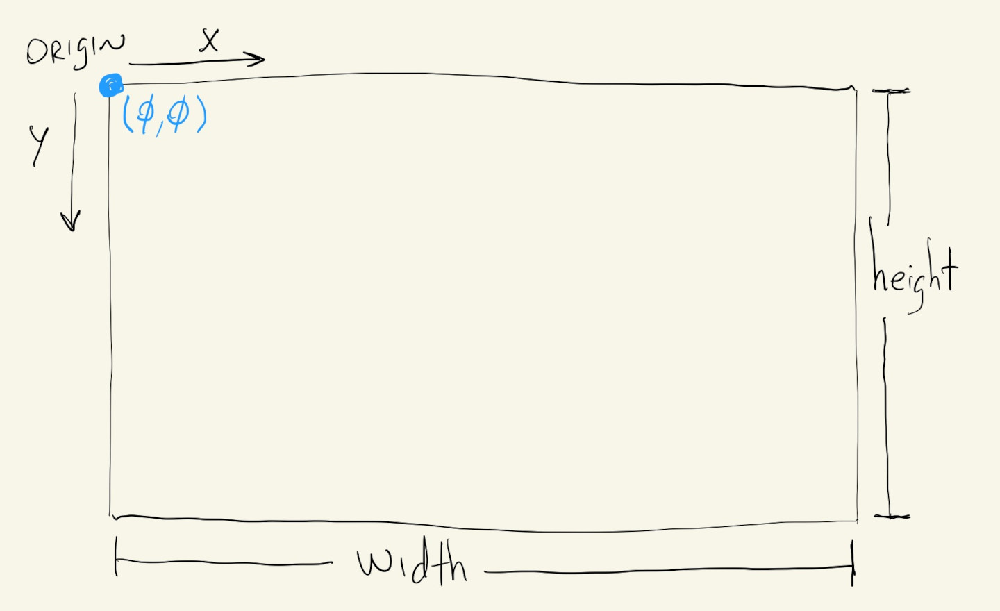
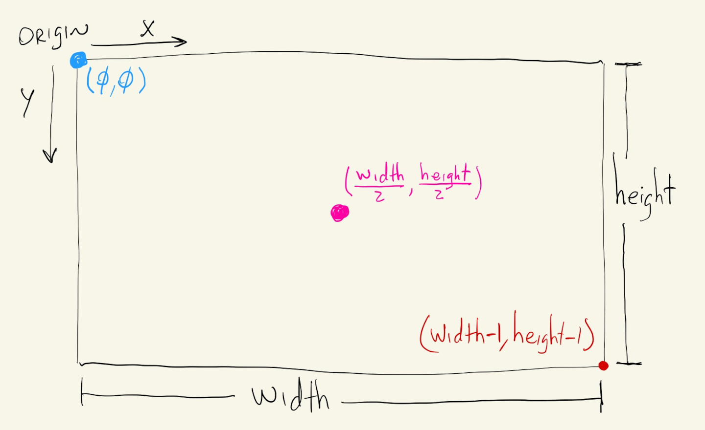
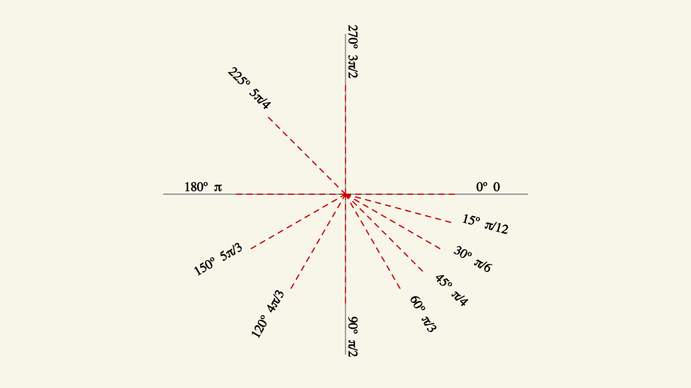

We briefly saw some commands for drawing shapes on our canvas in the previous section, when we looked at the overall organization of a p5.js project.
Let’s take a more detailed look at our canvas, the commands we can use for drawing shapes and how to represent colors in our p5.js sketches.
First, a quick introduction to the canvas.
The canvas is the section of our page where we can actually draw things. There’s an actual html <canvas> element on our page that is responsible for displaying our drawings, but we don’t have to worry about interacting directly with it. When we use the createCanvas() command, p5.js will automatically take care of creating and placing this <canvas> element on our page.
The createCanvas() command takes two parameters, or, two numbers, that specify a width and a height for our drawing area. We can always give it specific values in pixels, like: createCanvas(640, 480) or createCanvas(1920, 1080), but if we want our canvas to be proportional to our browser window, we can use the special p5.js keywords windowWidth and windowHeight to make the canvas take up as much space as possible on our page: createCanvas(windowWidth, windowHeight).
We can see the difference by running the following two sketches:
And, whether our canvas is created with specific pixel dimensions or using (windowWidth, windowHeight), we can always ask p5.js for the exact size of our canvas by accessing the width and height variables.
(clear any cookie warnings and look at the Console section after running the sketch below)
Before we start drawing, we just need to understand how the canvas is oriented and how to specify locations within its boundaries.
Just like createCanvas() required two numbers, for \((width, height)\), to define the size of our canvas, specifying locations on our canvas also requires two numbers, or coordinates, \((x, y)\). This is because in p5.js our canvas is a two-dimensional cartesian plane, where the first dimension represents the horizontal distance from the origin, and the second dimension the vertical distance. Unlike the traditional cartesian coordinate system from geometry, in p5.js, and most other computer graphics contexts, the origin of our canvas is on the top left corner and the vertical dimension grows downwards.

And now, the p5.js width and height variables can be very useful when we want to specify positions that are relative to the overall size of our canvas. For example, the pixel that’s exactly in the center of our canvas can always be specified with coordinates \((\frac{width}{2}, \frac{height}{2})\), independent of the exact size of our canvas.
Likewise, the pixel furthest away from the origin has coordinates \((width - 1, height - 1)\). The \(-1\) is necessary because even though our canvas is \(width\) pixels wide and \(height\) pixels tall, we have a pixel at \((0, 0)\), and if the first pixel along the \(x\) direction is at coordinate \(0\), the second pixel at coordinate \(1\), …, etc, …, the last pixel will be at coordinate \(width - 1\).

Now that we know how to use coordinates to specify locations on our canvas we can start drawing.
The p5.js commands rect() and ellipse() can be used to draw rectangles and ellipses, respectively. They’re very similar in a lot of ways, but also have some differences worth noting.
In their simplest form, they both take \(3\) parameters: x-location, y-location and size.
rect(10, 10, 80);
ellipse(200, 200, 100);
If we want the shapes to have different proportions, we just have to use a fourth parameter for the height of the shape:
rect(10, 100, 80, 40);
ellipse(300, 200, 100, 150);
We can play with the coordinates and sizes on the sketch above ☝️ to gain some familiarity and intuition about the coordinate system and these two functions.
Now, for some of the differences between rect() and ellipse(). Let’s say we want to draw an ellipse to the right of a rectangle. They’ll be next to each other, in the same vertical location, so we could try something like this:
rect(210, 300, 80);
ellipse(310, 300, 80);
Even though the first \(2\) parameters for rect() and ellipse() specify x and y coordinates, what they mean is different. For rect(), we specify the top-left corner of our shape and for ellipse() we specify its center.
Drawing them next to each other requires some adjusting to the coordinates. We can offset the ellipse’s x and y location by half of its diameter:
rect(210, 300, 80);
ellipse(350, 340, 80);
We can also use the p5.js functions rectMode() and ellipseMode() to change how rectangles and ellipses are drawn.
To draw rectangles by specifying their center location, we can use
rectMode(CENTER);
To draw ellipses by specifying their top-left corner, we can use:
ellipseMode(CORNER);
One thing to note is that once we call rectMode() or ellipseMode(), every shape that we draw afterwards will be drawn using the mode specified. To undo this, we can call:
rectMode(CORNER);
ellipseMode(CENTER);
Or, better yet, we can just pick one mode in the beginning, whichever we think will be most useful for our sketch, and keep it throughout the whole sketch.
Let’s say we want to draw a grid of squares, rectangles and circles. In this situation, where we are starting at the top-left corner of our canvas and drawing to the right and to the bottom, it might be easier to do math for the locations of the top-left corners of our shapes. Since we’ll keep the same mode throughout the whole sketch, we can just put ellipseMode(CORNER) inside our setup() function.
But, on the other hand, if we are drawing concentric shapes, or placing them relative to the center of the canvas, we might find it easier to use rectMode(CENTER) throughout our whole sketch:
p5.js has commands for a bunch of other shapes besides rectangles and ellipses.
The quad() function can be used to draw non-rectangle quadrilaterals by specifying \(4\) pairs of x and y coordinates.
Similarly, the triangle() function draws a triangle from \(3\) pairs of x and y coordinates.
The arc() function draws partial ellipses, and its first \(4\) parameters are just like the ellipse() parameters for x and y coordinates, width and height, but the 5\(^{th}\) an 6\(^{th}\) parameters specify the angles of where the arc starts and stops, respectively.
Angles in p5.js are measured in radians in relation to the positive x direction. And because our y values increase as we go down the canvas, increasing angles will also go towards this positive y direction.
How angles are measured in p5.js and degree/radian equivalents for some common angles:

So now, we can use this drawing as reference to help us draw some partial ellipses:
p5.js has a method for allowing us to draw custom and non-regular shapes.
First, we call the beginShape() function, then we add as many vertices as we want to our shape, with the vertex() function, in the order they are to drawn, and finally we let p5.js know we finished our shape by calling the endShape() function.
We can call endShape(CLOSE) to close our shape without having to replicate the first vertex as the last vertex.
We saw some possibilities for drawing shapes.
Let’s talk about colors.
The default color mode for p5.js sketches is RGB, or RGBA, which means that colors are specified using \(3\) or \(4\) values between \(0\) and \(255\).
The first value corresponds to the amount of red in the color, the second to the amount of green and the third to the amount of blue. Those are the \(3\) color channels in RGB mode because they correspond to the physical pixels on a monitor, which have tiny red, green and blue lights.
The fourth value, when specified, corresponds to the amount of opacity of our color, where \(0\) is a fully transparent color and \(255\) fully opaque.
We can also specify RGB colors by just using \(1\) value. This is a shortcut to specify that all three values for the red, green and blue channels are the same, and the result is a grayscale color.
Besides the background() command, which we’ve been using to specify the pink color of our background, we can also use the fill() and stroke() commands to specify the fill and outline colors for our shapes.
And, just like the rectMode() and ellipseMode() commands, once we call fill() or stroke(), everything drawn afterwards will have the same color.
Colors can also be specified using html color names, or hex notation.
Hex notation might be familiar from image-editing software. It contains the exact same information as the RGB format, but represented in hexadecimal notation, where each of the \(3\) channel values between \(0\) and \(255\) is represented as a hexadecimal number between 00 and FF, where FF is the hexadecimal notation for the number \(255\).
We can explore the equivalencies between all of these representations in the sketch below.
The sliders can be used to select values for the \(3\) RGB channels of the background color. The RGB and hex representations of this color are then written out, and the closest of the \(140\) html colors is displayed in a rectangle.
In addition to the default RGB color mode, p5.js also allows us to describe colors using the HSB color mode.
HSB stands for Hue, Saturation and Brightness, and sometimes is also referred to as HSV for Hue-Saturation-Value.
The Hue value describes the color itself: whether it’s red, blue, purple, orange, etc. The Saturation and Brightness components are attributes of the color, where Saturation describes how “colorful” the color is and Brightness its “illuminance”. Decreasing the saturation value will make the color more gray, where decreasing its Brightness will make it more black.
In order to enable the HSB color mode in p5.js we have to call the colorMode() function with HSB for its parameter: colorMode(HSB).
After that, all of the color commands like background(), fill() and stroke() will interpret their \(3\) parameters as HSB values.
In HSB mode the Hue value has a range from \(0\) to \(359\), and Saturation and Brightness go from \(0\) to \(100\). The unit for Saturation and Brightness is \(\%\), where the Hue value is represented in degrees. This means that hue values wrap around their range, and a hue value of \(359\) is actually right next to the hue value of \(0\).
This sketch is very similar to the previous one, but now the \(3\) sliders control the Hue, Saturation and Brightness values for our background color.
Some people find it easier to interpolate between colors and create color transitions in the HSB space because we can go through a wide palette of colors by just varying hue value. Where in RGB we always have to account for all \(3\) channels when creating transitions or interpolating colors.